PillBell — Návod k použití
Připomínač léků, který opravdu zazvoní.
První spuštění
Při prvním otevření vás krátký průvodce požádá o několik oprávnění. Každé z nich slouží jedinému účelu — aby připomínka opravdu zazvonila. PillBell nemá přístup k internetu a nic o vás nesbírá:
- Notifikace — bez nich se žádná připomínka nemůže ukázat.
- Budíky a připomínky — aby PillBell zazvonil přesně na minutu.
- Zobrazení na celou obrazovku — budík může rozsvítit celý displej jako klasický budík.
- Baterie / běh na pozadí — aby telefon aplikaci neuspal. Průvodce ukáže kroky přesně pro vaši značku telefonu (Samsung, Xiaomi a další se liší).
- Přístup k režimu Nerušit — připomínka projde i přes zapnuté Nerušit.
- Widget na plochu — poslední krok nabídne přidání widgetu PillBell na plochu; dá se přeskočit a přidat později.
Přidání léku
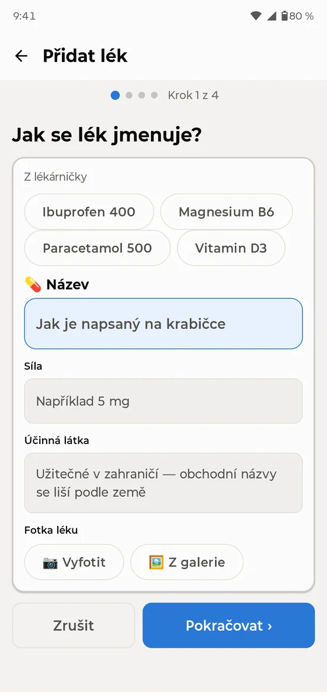
Jděte na Léky → Přidat lék. Průvodce ve čtyřech krocích se zeptá na název, formu a sílu, rozvrh, množství na dávku a ukáže shrnutí. Můžete přidat i fotku balení, ať vždy víte, co hledat.
PillBell zvládá všechny běžné rozvrhy: pevné časy během dne (bez omezení počtu), několikrát denně, po N hodinách, po N dnech, vybrané dny v týdnu, cykly typu 21/7, týdenní i měsíční léky, obden i poloviční a proměnné dávky („1 až 2 tablety“).
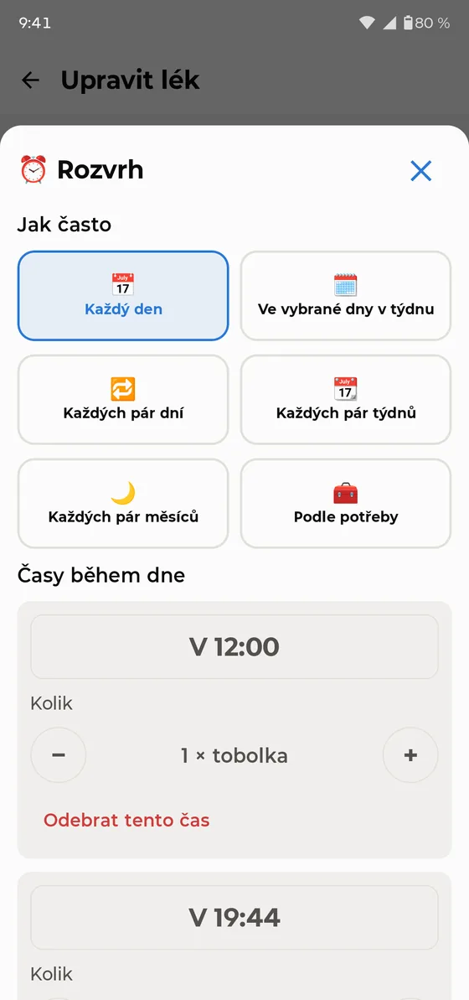
Obrazovka Dnes
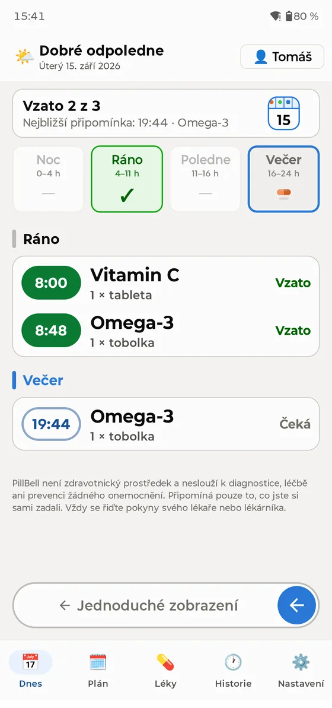
Dnes funguje jako denní dávkovač léků: čtyři přihrádky — Noc, Ráno, Poledne, Večer. Zelená ✓ znamená vysypáno; ikonky pilulek ukazují, co ještě čeká.
- Vidíte celý den najednou, rozdělený na Noc, Ráno, Poledne a Večer. Klepnutí na přihrádku seznam posune na tu část dne.
- Klepnutím na dávku ji potvrdíte nebo opravíte: Vzato, Vzato v jiný čas, Vynecháno, nebo zpět na Nevzato.
- Dávku lze potvrdit kdykoli během dne. Vzetí o víc než 30 minut dřív se poctivě zapíše jako „Vzato dřív“.
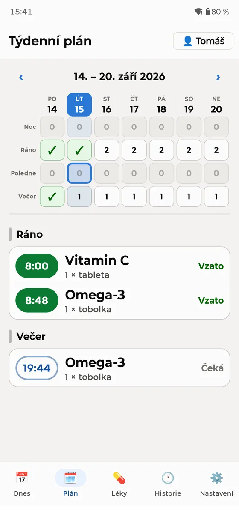
Záložka Plán ukazuje celý týden jako dávkovač: sloupce jsou dny, řádky části dne. Zelená ✓ znamená vysypáno, číslo kolik léků čeká, nula že tehdy nic neberete. Klepnutím na den se dole rozbalí jeho rozpis, přejetím do strany přejdete na další týden.
Když zvoní
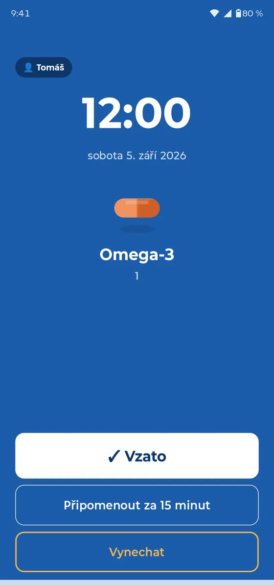
V naplánovanou minutu PillBell zvoní jako budík — na celou obrazovku, i ze zamčeného telefonu, a zvoní, dokud nezareagujete. Projde i přes režim Nerušit.
- ✓ Vzato — potvrdí dávku a budík ztichne.
- Připomenout za 15 minut — odloží; aplikace pak všude ukazuje „Odloženo do HH:MM“.
- Vynechat — zapíše dávku jako vědomě vynechanou.
Když nikdo nereaguje, připomínka se po chvíli sama zopakuje. Na zamčené obrazovce se názvy léků standardně neukazují (soukromí) — v Nastavení je můžete povolit, pokud bydlíte sami.
Jednoduchý režim
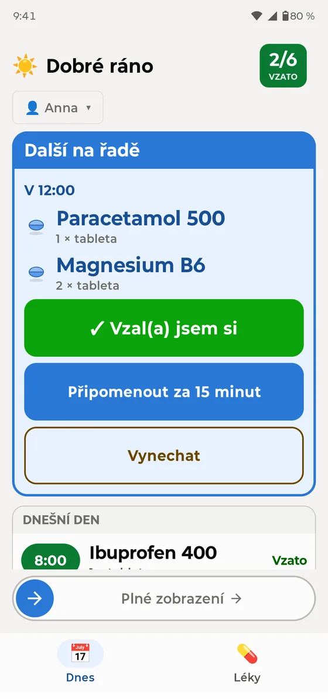
Pro každého, komu telefony nejsou vlastní: Nastavení → Zobrazení → Zjednodušené. Celá aplikace se změní v jednu velkou kartu — co si vzít jako další a jedno velké tlačítko „Vzal(a) jsem si“. Zpět se vrátíte posuvníkem „Plné zobrazení“ dole.
Rodinné profily
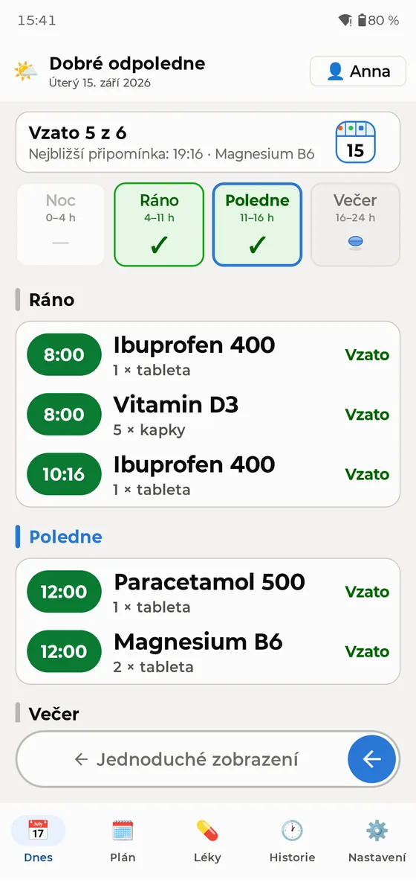
Jeden telefon může připomínat celé domácnosti. Osoby přidáte v Nastavení → Osoby. Mezi lidmi přepínáte tlačítkem se jménem vpravo nahoře na Dnes — ukazuje i, kdo má ještě dávky před sebou. Připomínky říkají, komu patří („Anna: 2 léky“).
Widgety
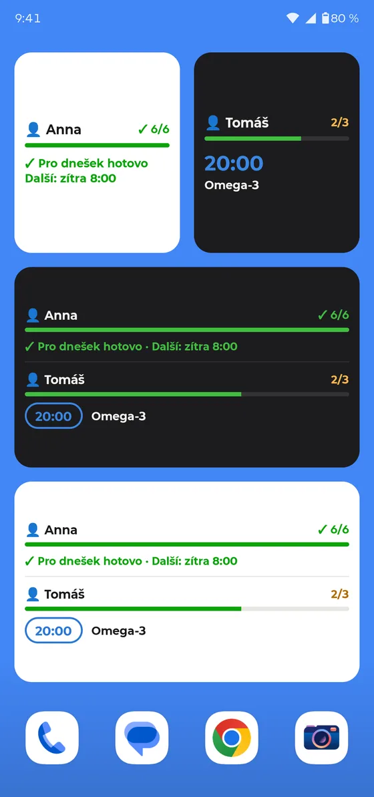
Podržte prst na prázdné ploše → Widgety → PillBell. Jsou dva druhy, každý ve světlé i tmavé verzi:
- Dnešní přehled — celá domácnost: postup dne, nejbližší čas a léky, které jsou na řadě.
- Widget na osobu (malý) — při přidání si vyberete, čí léky má ukazovat. Dva vedle sebe: „Anna“ a „Tomáš“.
Od verze 1.0.1 má widget prstenec: ukazuje, kolik dnešních dávek je vzato (třeba 4/6). Zelený prstenec s fajfkou = pro dnešek hotovo, červený = prošlá dávka. Když má dnes dávky jen jedna osoba, zabere velký prstenec celý widget.
Historie a PDF pro lékaře
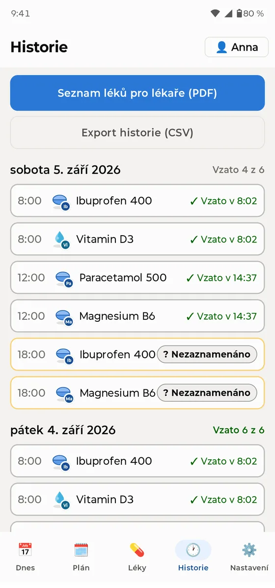
Záložka Historie uchovává posledních 30 dní. Jedním klepnutím vytvoříte PDF seznam léků pro lékaře — léky, dávky a jak pravidelně jste je brali. Vše jde exportovat i jako CSV a starší záznamy lze opravit.
Lékárnička a zásoby
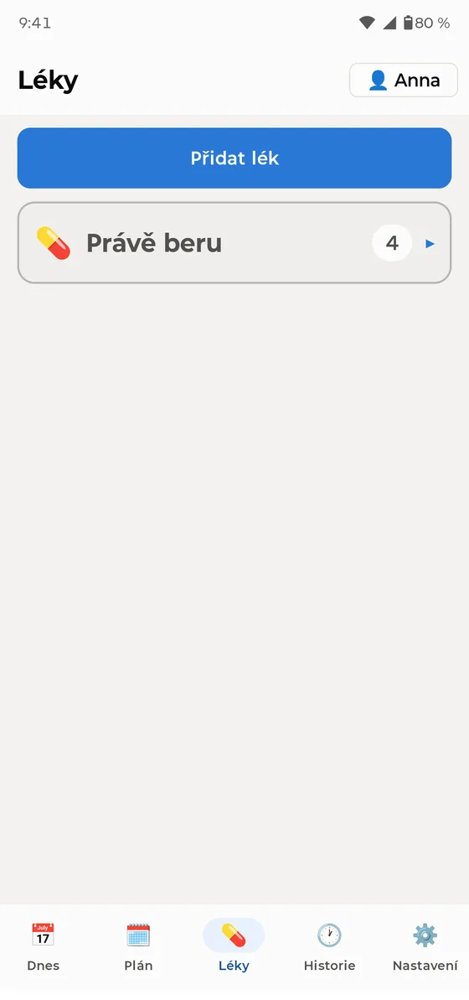
Léky „podle potřeby“ (na bolest, kapky…) žijí v lékárničce — nemají rozvrh, zapíšete je, když si je vezmete. U pravidelných léků můžete sledovat zásoby: PillBell odpočítává a včas upozorní, že docházejí.
Zálohy — důležité
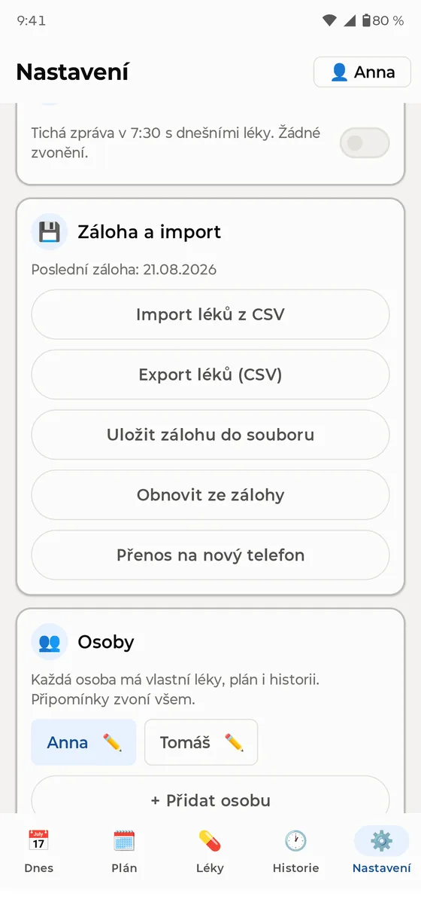
Jděte do Nastavení → Záloha a exportujte zálohu (jediný soubor včetně fotek léků). Uložte ji kam chcete — pošlete si ji e-mailem, dejte do cloudu, zkopírujte do počítače. Přechod na nový telefon: nainstalovat PillBell, obnovit zálohu, hotovo — všechny připomínky se samy znovu nastaví. PillBell zálohu jemně připomene zhruba jednou měsíčně.
Aby připomínky spolehlivě chodily
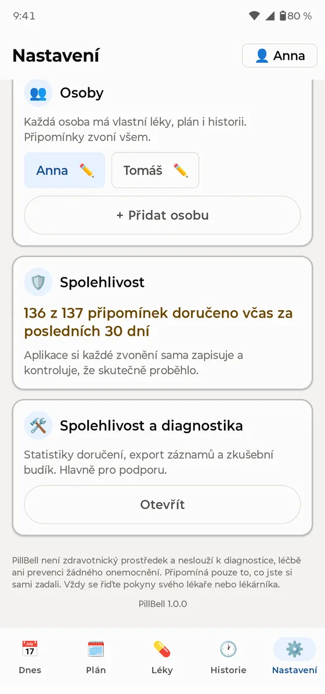
- Dokončete krok s baterií v průvodci (najdete ho i v Nastavení). Výrobci telefonů rádi uspávají aplikace kvůli baterii — to je nejčastější důvod, proč připomínače „ztichnou“.
- Nikdy aplikaci násilně neukončujte.
- Samsung: držte PillBell mimo „Spící aplikace“. Xiaomi: povolte „Autostart“. Aplikace vás na správnou obrazovku navede.
- Sledujte Nastavení → Spolehlivost — PillBell zaznamenává každý budík a poctivě ukazuje, kolik jich za posledních 30 dní zazvonilo včas.
Časté dotazy
Připomínka nezazvonila. Co teď? Otevřete Nastavení → Spolehlivost a průvodce baterií. V 9 z 10 případů aplikaci umlčel spořič baterie — průvodce to napraví. Ověřte také, že aplikace nebyla násilně ukončena.
Funguje to s režimem Nerušit? Ano, pokud jste při nastavení udělili přístup k Nerušit.
Co cestování a časová pásma? Rozvrh zůstává ukotvený k domácímu času — odstupy dávek se přeletem nikdy neposunou.
Můžu aplikaci zamknout? Ano — Nastavení → Zámek aplikace (otisk/PIN). Zvonící budík a „Vzato“ fungují vždy i bez odemykání.
Jaké jazyky? Aplikace umí česky, anglicky, německy, francouzsky, španělsky, italsky, polsky, nizozemsky, portugalsky a ukrajinsky.
Něco mi chybí nebo nefunguje — jak dám vědět? Nastavení → Líbí se vám PillBell? → Napsat vývojáři. Otevře se e-mail s doplněnou verzí aplikace a typem telefonu (nic o lécích). Tamtéž najdete Ohodnotit v Google Play a Doporučit známému.

PillBell is made by Tomelo Apps.
Podpora: support@tomelo.app · Zásady ochrany soukromí
PillBell není zdravotnický prostředek a neslouží k diagnostice, léčbě ani prevenci žádného onemocnění. Vždy se řiďte pokyny svého lékaře nebo lékárníka.